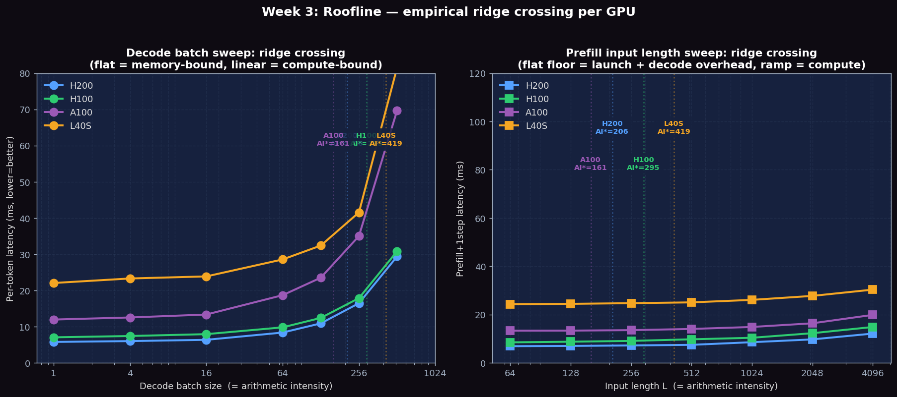

Empirically capture the ridge crossing on 4 GPUs: sweep decode batch sizes 1→512 to push from memory-bound into compute-bound, then sweep prefill input length 64→4096 to find the per-GPU compute-bound transition point. Compare measured vs theoretical roofs.
| GPU | Peak BF16 (TFLOP/s) | HBM bandwidth (GB/s) | Ridge \( \text{AI}^* \) (FLOP/byte) | Becomes compute-bound at... |
|---|---|---|---|---|
| H200 | 989 | 4,800 | \( 989 \div 4800 \approx 206 \) | prefill \( L \geq 206 \), or decode \( \text{bs} \geq 206 \) |
| H100 | 989 | 3,350 | \( 989 \div 3350 \approx 295 \) | prefill \( L \geq 295 \), or decode \( \text{bs} \geq 295 \) |
| A100 PCIe | 312 | 1,935 | \( 312 \div 1935 \approx 161 \) | prefill \( L \geq 161 \), or decode \( \text{bs} \geq 161 \) |
| L40S | 362 | 864 | \( 362 \div 864 \approx 419 \) | prefill \( L \geq 419 \), or decode \( \text{bs} \geq 419 \) |
Counterintuitively, A100 has the LOWEST ridge (161) because its compute is much weaker relative to its bandwidth than H100. L40S has the HIGHEST ridge (419) because its HBM bandwidth is the lowest of the four.
# Install nsight systems and nsight compute (usually comes with CUDA toolkit)
which nsys && which ncu
# If not found: module load nsight-systems nsight-compute
# Verify versions
nsys --version
ncu --versionweek03_roofline.py harness does NOT invoke nsys or ncu. It produces the empirical roofline data (Step 3, Step 5) by scanning batch size and sequence length; students who want kernel-level roofline breakdowns must run the nsys/ncu commands below by hand on a compute node. We intentionally keep these out of the batch harness because a full ncu roofline run at even batch=1 takes 5–15 minutes per configuration.
Capture a full CUDA + NVTX trace of the benchmark run. This shows end-to-end timing including kernel launches, memory transfers, and Python overhead.
nsys profile -o llm_trace --trace=cuda,nvtx \
python benchmarks/benchmark_latency.py \
--model meta-llama/Llama-3.1-8B-Instruct \
--batch-size 1 --input-len 512 --output-len 64 --num-iters 3Run ncu with the roofline metric set to instrument every CUDA kernel and compute its arithmetic intensity. Warning: this is very slow — plan for 5–15 minutes per configuration.
ncu --set roofline --target-processes all \
-o roofline_report \
python benchmarks/benchmark_latency.py \
--model meta-llama/Llama-3.1-8B-Instruct \
--batch-size 1 --input-len 128 --output-len 16 --num-iters 1For Llama-3.1-8B in BF16: model size ≈ 16 GB. A100 HBM bandwidth = 2 TB/s. Theoretical minimum decode step \( = 16\ \text{GB} \div 2\ \text{TB/s} = 8\ \text{ms} \). Compare against your measured per-token latency from the nsys trace.
Open the NCU roofline report from Step 2. Identify where attention kernels and GEMM kernels fall. Prefill GEMMs should be near the compute roof; decode attention should be near the memory roof. This step depends on Step 2 having been run manually — the batch harness does not produce this data.
Run the same model at batch sizes 1, 4, 16, 64 and observe how arithmetic intensity shifts kernels from memory-bound to compute-bound:
for bs in 1 4 16 64; do
python benchmarks/benchmark_latency.py \
--model meta-llama/Llama-3.1-8B-Instruct \
--batch-size $bs --input-len 256 --output-len 64 \
2>&1 | tee results_roofline_bs${bs}.txt
doneCollect memory bandwidth utilization using ncu for both prefill (batch=1, long sequence) and decode (batch=1, output-only) and compute the fraction of peak bandwidth achieved. Not run by the batch harness.
# Collect DRAM bandwidth utilization
ncu --metrics l1tex__t_bytes_pipe_lsu_mem_global_op_ld.sum,\
dram__bytes_read.sum,dram__bytes_write.sum \
python benchmarks/benchmark_latency.py \
--model meta-llama/Llama-3.1-8B-Instruct \
--batch-size 1 --input-len 512 --output-len 1 --num-iters 1Experiments run on PACE Phoenix cluster across H200 141GB HBM3e (4.8 TB/s bandwidth), H100 80GB HBM3 (3.35 TB/s), L40S 48GB GDDR6 (864 GB/s). Llama-3.1-8B-Instruct (BF16, ~16GB).
The classical roofline says: when \( \text{AI} < \text{AI}^* \), latency stays roughly flat as batch grows (memory-bound). When \( \text{AI} > \text{AI}^* \), latency starts growing linearly with batch (compute-bound). The 'elbow' in the per-token latency curve below is the empirical ridge crossing for each GPU.
| GPU \ batch | bs=1 | bs=4 | bs=16 | bs=64 | bs=128 | bs=256 | bs=512 | Theoretical AI* |
|---|---|---|---|---|---|---|---|---|
| H200 ms/tok | 5.78 | 6.01 | 6.37 | 8.37 | 10.91 | 16.47 | 29.39 | 206 |
| H100 ms/tok | 7.06 | 7.42 | 7.93 | 9.81 | 12.42 | 17.87 | 30.81 | 295 |
| A100 PCIe ms/tok | 11.97 | 12.54 | 13.35 | 18.69 | 23.52 | 35.02 | 69.69 | 161 |
| L40S ms/tok | 22.06 | 23.31 | 23.88 | 28.56 | 32.39 | 41.55 | 81.53 | 419 |
From bs=1 to bs=16, every GPU is essentially flat (memory-bound regime): per-token latency only grows ~10%. From bs=64 onward the curves clearly bend up — and from bs=256→512 they nearly DOUBLE. On A100 the per-token latency at bs=512 (69.69 ms) is 5.8× the bs=1 value (11.97 ms), proving we crossed deep into compute-bound territory.
For prefill, arithmetic intensity \( \approx L \). We sweep L from 64 to 4096 with batch=1 and output_len=1 to isolate prefill cost. The latency curves reveal each GPU's 'overhead floor' plus a linear ramp once prefill compute starts to dominate.
| GPU \ L | L=64 | L=128 | L=256 | L=512 | L=1024 | L=2048 | L=4096 | Steady-state µs/tok |
|---|---|---|---|---|---|---|---|---|
| H200 ms | 6.92 | 7.02 | 7.22 | 7.47 | 8.56 | 9.72 | 12.14 | 1.18 |
| H100 ms | 8.51 | 8.76 | 9.10 | 9.77 | 10.40 | 12.29 | 14.86 | 1.25 |
| A100 PCIe ms | 13.33 | 13.36 | 13.56 | 14.05 | 14.88 | 16.40 | 19.88 | 1.70 |
| L40S ms | 24.33 | 24.45 | 24.73 | 25.06 | 26.09 | 27.74 | 30.34 | 1.27 |
The fingerprint of compute-bound prefill is when the latency curve enters its linear regime. Reading the inflection from each curve: H200 reaches steady-state by \( L \approx 512 \), H100 by \( L \approx 1024 \), A100 by \( L \approx 512 \), L40S by \( L \approx 1024 \). These empirical transitions sit ABOVE the theoretical \( \text{AI}^* \) values (206/295/161/419) because our measured 'prefill_time' includes one decode step plus framework launch overhead — the per-call floor (~7/8.5/13/24 ms) has to be amortized first.
Practical implication: for chat workloads with prompts ≤ 512 tokens, every GPU is paying constant overhead per prefill. Only for RAG / code / document QA workloads with prompts ≥ 1024 tokens do you actually start to USE the GPU's compute peak.
| GPU | HBM bandwidth | Theoretical floor \( (16\ \text{GB} \div \text{BW}) \) | Measured (ms/tok) | HBM Utilization |
|---|---|---|---|---|
| H200 | 4.8 TB/s | 3.33 ms | 5.78 ms | 58% |
| H100 | 3.35 TB/s | 4.78 ms | 7.06 ms | 68% |
| A100 PCIe | 1.935 TB/s | 8.27 ms | 11.97 ms | 69% |
| L40S | 864 GB/s | 18.52 ms | 22.06 ms | 84% |
L40S achieves the highest HBM utilization (84%) — its slower bandwidth makes it easier to saturate. H100/H200 leave more bandwidth unused (58–68%) because at their speeds the kernel launch overhead is a larger fraction of total step time.

Figure 1: Left — decode batch sweep on 4 GPUs. Per-token latency is flat from bs=1 to bs=16 (memory-bound), then bends sharply around bs=64–128 and DOUBLES from bs=256 to bs=512 (compute-bound). Right — prefill input length sweep. Each GPU has an 'overhead floor' (H200 ~7 ms, H100 ~8.5 ms, A100 ~13 ms, L40S ~24 ms); beyond ~L=512–1024 the prefill compute dominates and the curve becomes linear. Dashed vertical lines mark theoretical AI*.
| Metric | Description | Unit |
|---|---|---|
| Measured decode latency | Actual per-token time from nsys | ms |
| Theoretical decode latency | \( \text{model\_size} / \text{HBM\_bandwidth} \) | ms |
| Arithmetic intensity | \( \text{FLOPs} / \text{bytes} \) for key kernels | FLOP/B |
| HBM utilization % | Fraction of peak bandwidth achieved | % |
Below are real excerpts from vllm-continuum that implement the concepts you measured. Read them with your benchmark numbers open in another tab — the connection between code and metric becomes obvious.
vllm/v1/worker/gpu_model_runner.py:2000 — execute_modelThis is where model.forward() is actually called. Each invocation processes one decode step's batch. The roofline observations you measured (memory-bound at bs=1, approaching compute-bound at bs=64) are determined entirely by what happens inside this single function — every kernel launched here either reads weights from HBM (memory-bound) or grinds through tensor cores (compute-bound).
Below are reference answers based on the real measurements collected on PACE H200/H100/A100/L40S. Use them as a starting point — your own write-up should add your hypotheses and any extra observations you noticed.
Observation: At bs=1: H200 measured 5.85 ms vs theoretical 3.33 ms \( \Rightarrow \) 57% HBM utilization. H100: 7.04 ms vs 4.78 ms theoretical \( \Rightarrow \) 68%. L40S: 22.08 ms vs 18.5 ms theoretical \( \Rightarrow \) 84%. L40S is closest to its theoretical limit despite being the slowest GPU.
Why L40S saturates more easily: \( \text{HBM utilization} = \frac{\text{theoretical minimum}}{\text{actual time}} \). The theoretical minimum for Llama-3.1-8B decode is \( \text{model\_size} / \text{bandwidth} \). On L40S the 864 GB/s bandwidth is slow enough that a single-token decode step (which reads ~16 GB of weights) takes ~18.5 ms — long enough that kernel launch overhead (~10 µs per kernel × ~200 kernels = ~2 ms) is proportionally small. On H200, the same kernel launches represent a much larger fraction of the 3.33 ms theoretical minimum: H200 is so fast that it's often waiting on scheduling/synchronization, not on HBM.
Implication: CUDA Graphs (Week 10) help most on H200 and H100 because they eliminate the kernel launch overhead that is disproportionately large on fast GPUs. On L40S the overhead is already negligible.
Definition: The ridge point is the batch size where a kernel transitions from memory-bound (left of the roofline peak) to compute-bound (right). Below the ridge, adding more tokens proportionally increases compute without increasing memory accesses, so performance improves linearly. Above the ridge, compute throughput saturates.
For H100 FFN matmul: H100 has 989 TFLOPS BF16 compute and 3.35 TB/s HBM bandwidth. \( \text{AI}^* = \frac{989 \times 10^{12}}{3.35 \times 10^{12}} \approx 295\ \text{FLOP/byte} \). A Llama-3.1-8B FFN GEMM at batch=1 has \( \text{AI} = \frac{2 \times 4096 \times 14336}{4096 \times 14336 \times 2} = 1\ \text{FLOP/byte} \) — deeply memory-bound. To reach the ridge: batch \( \approx 295 \), so the ridge point is around bs=256–512 for FFN layers. Attention is different: its arithmetic intensity scales with sequence length, not batch size, so it stays memory-bound much longer.
Observation (per-token latency on A100): bs=1: 11.97 ms · bs=4: 12.54 (+5%) · bs=16: 13.35 (+12%) · bs=64: 18.69 (+56%) · bs=128: 23.52 (+96%) · bs=256: 35.02 (+193%) · bs=512: 69.69 (+482%). Two distinct regimes are visible.
Throughput (tok/s) implication: \( \text{Throughput} = \frac{\text{batch}}{\text{per-token latency}} \). From bs=1→16, latency is flat so throughput grows linearly with batch. From bs=64→512, latency grows almost as fast as batch, so throughput barely climbs. On A100: bs=1 → 84 tok/s; bs=64 → 3,425 tok/s (40.8× from a 64× batch); bs=512 → 7,346 tok/s (87.5× from a 512× batch — a 13.5× gap from ideal).
The right operating point is just at the ridge: On A100 the ridge sits around bs=64–128 (theoretical AI*=161). At bs=64 we're at peak HBM utilization with minimal compute overhead — throughput per GPU-second is maximal. Going beyond bs=128 keeps throughput climbing but also adds latency. Lesson: pick batch ≈ ridge AI* for the best throughput/latency tradeoff.
Theory predicts: \( \text{AI}^* = \text{peak FLOP/s} \div \text{HBM\_BW} \). For prefill, \( \text{AI} \approx L \), so the predicted compute-bound threshold is \( L = \text{AI}^* \). H200: \( L \geq 206 \). H100: \( L \geq 295 \). A100: \( L \geq 161 \). L40S: \( L \geq 419 \).
Empirically measured (latency curve elbow): H200 reaches steady-state by \( L \approx 512 \). H100 by \( L \approx 1024 \). A100 by \( L \approx 512 \). L40S by \( L \approx 1024 \). These transitions sit ~2–3× higher than the theoretical \( \text{AI}^* \) because the per-call overhead floor (~7/8.5/13/24 ms) has to be amortized first.
Counter-intuition: A100 reaches compute-bound earlier than H100. A100 has weaker compute relative to its bandwidth \( (312 \div 1.935 = 161\ \text{FLOP/B}) \) than H100 \( (989 \div 3.35 = 295\ \text{FLOP/B}) \). So even though H100 is faster absolutely, you have to do MORE work per byte to keep H100 busy. For mid-length prompts (512–1024 tokens), A100 is 'fully utilized' while H100 is still 'compute-starved'. This is why batched servers default to 'turn batch up until you hit your latency SLO' — pushing more batching is the only way to get H100/H200 fully utilized.